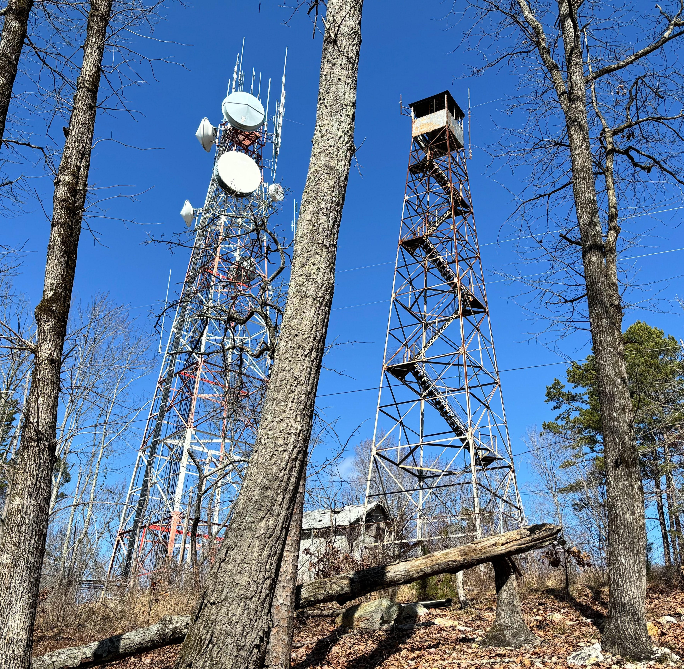

Show the code
knitr::include_graphics(here("images/IMG_1287-two-towers.jpg"))

On February 24, 2024 I visited the site.
Surprise: there are TWO towers, not one (Figure 4.1). The lookout tower referenced in the 1954 recovery description still stands. It’s behind a fence, and the lower stairs have been removed. The second tower the “micro-wave mast” mentioned in the 1969 recovery description, however “mast” seems like an understatement to me: the tower hosting the microwave antennae (and now many additional antennae) is taller and more massive than the lookout tower.
knitr::include_graphics(here("images/IMG_1287-two-towers.jpg"))A cinder block building replaced the “tin shed” that obliterated FY3210 mentioned in the 1954 recovery description (above to the left of the lookout tower), and there is a square concrete block at the base of the lookout tower. Is this the location of FY3209 with the designation “HILLSBORO LOOKOUT TOWER”?
knitr::include_graphics(here("images/IMG_1295-lookouttower-base.jpg"))
I was unable to find a mark. One would expect it to be in the middle of the block, but maybe not, and maybe dead leaves and twigs are covering it. Is the mark there or not?
knitr::include_graphics(here("images/IMG_1294-block-at-tower-base.jpg"))In 1985 WBK from the U.S. Power Squadron reported
FY3210'HILLSBORO NO. 1 1933 - HILLSBORO RM NO. 1 - GOOD - SLIGHTLY DEFACED.But the next recovery reported this:
FY3210'RECOVERY NOTE BY US POWER SQUADRON 2004
FY3210'SEARCH WAS MADE IN THE AREA OF PLOTTED POSITION. NO MARKER COULD BE
FY3210'FOUND.Thus in February 2024 I was surprised to find a mark in the vicinity of where RM 1 should be:
knitr::include_graphics(here("images/IMG_1298-apparent-rm1-context.jpg"))Here’s the mark, apparently not much worse than in 1985 when it was reported to be “slightly defaced”:
knitr::include_graphics(here("images/IMG_1297-apparent-rm1.jpg"))
The original description (1933) provided location information for the reference marks but not the stamping:
FY3210' REFERENCE MARKS
FY3210'NOS. 1 AND 2 ARE STANDARD REFERENCE DISKS IN STONE OUTCROPS,
FY3210'NOTE 12A.
FY3210'REFERENCE MARK NO 1 IS IN TOP OF A 5 BY 9-FOOT STONE WHICH
FY3210'PROJECTS 3.9 FEET ABOVE GROUND, IN A LINE WITH AN ALUMINUM
FY3210'WATER TANK AT FOOT OF HILL IN TOWN OF HILLSBORO AND
FY3210'STATION, AND 22.16 METERS (72.7 FEET) FROM STATION
FY3210'N 41 DEG 52 MIN E.The 1954 recovery provided more detail:
FY3210'REFERENCE MARK NO. 1 IS 72.64 FEET NORTHEAST OF THE STATION,
FY3210'45 FEET NORTH OF THE NORTHEAST LEG OF THE LOOKOUT TOWER. THE
FY3210'DISK IS SET FLUSH IN A DRILL HOLE IN THE TOP OF A 5 X 9 FOOT
FY3210'GRANITE BOULDER WHICH PROJECTS ABOUT 4 FEET AND IS
FY3210'STAMPED---HILLSBORO NO 1 1933--- (NOTE 12 A).“HILLSBORO 1 1933” is close to “HILLSBORO NO 1 1933”. Surveyor RDH added “NO” (“number”) to the stamping when the mark was recorded (or someone did that when transferring the paper record to the NGS database).
How then did an anonymous member of the US Power Squadron miss Reference Mark 1 in 2004?
FY3210 STATION RECOVERY (2004)
FY3210
FY3210'RECOVERY NOTE BY US POWER SQUADRON 2004
FY3210'SEARCH WAS MADE IN THE AREA OF PLOTTED POSITION. NO MARKER COULD BE
FY3210'FOUND.I was not able to find Reference Mark 2. It likely would be in the area of the photo below. Maybe it’s under the brush. Or maybe the old power pole was removed and this one was installed in a different location, and the boulder hosting the mark was disturbed in the process. In any case there is no “power meter” on on the pole now.
FY3210'REFERENCE MARK NO. 2 IS ABOUT 5 FEET LOWER IN ELEVATION THAN
FY3210'THE STATION, 82.00 FEET SOUTHEAST OF THE STATION, 54 FEET
FY3210'SOUTHEAST OF THE SOUTHEAST LEG OF THE LOOKOUT TOWER AND 10 FEET
FY3210'NORTHWEST OF A POWER LINE POLE WITH METER ATTACHED. THE DISK
FY3210'IS FLUSH IN A DRILL HOLE IN THE TOP OF A 3 X 4 FOOT GRANITE
FY3210'BOULDER WHICH PROJECTS ABOUT 2 FEET AND IS STAMPED---HILLSBORO
FY3210'NO 2 1933--- (NOTE 12A).knitr::include_graphics(here("images/IMG_1301-possible-rm2-location.jpg"))
In other news, the electronics for the radio tower have been upgraded and moved to a climate-controlled building and a container closer to the tower (the cinder block shed is to the right immediately outside the photo below). The tin shed that was the cause of FY3210’s demise was replaced by the cinder block shed, and now the cinder block shed is no longer used and has fallen into disrepair (see roof in Figure 4.4).
This new building and container were built since 2006 and obliterated FY3209. This fact has not made its way into the FY3209 datasheet.
knitr::include_graphics(here("images/IMG_1292-buildings-for-electronics-scaled.jpg"))